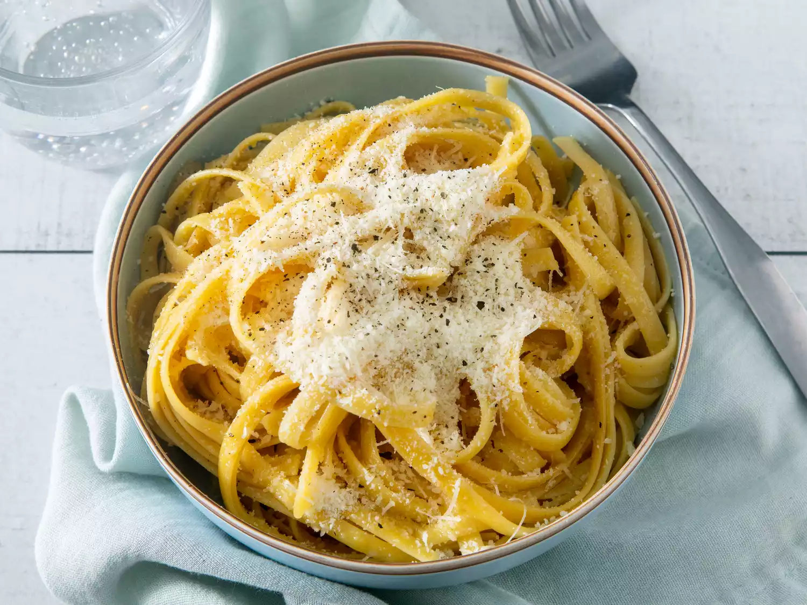

Butter Noodles

Description:
A simple to make pasta with creamy flavor and noodles
that you can't resist!
Ingredients
- 16 ounces of fettuccine noodles
- 6 tablespoons butter
- 1/3 cup of grated parmesan cheese
- salt and pepper
Steps
- Fill a pot with lightly salted water and bring to a rolling boil
- Stir in the fettuccine, bring it back to a boil, then cook it for 8-10 minutes
- Drain the water from the pot then mix in butter, parmesan, salt, and pepper until its all mixed up
- Pour into a bowl and eat
Go back to Recipe site
Click here